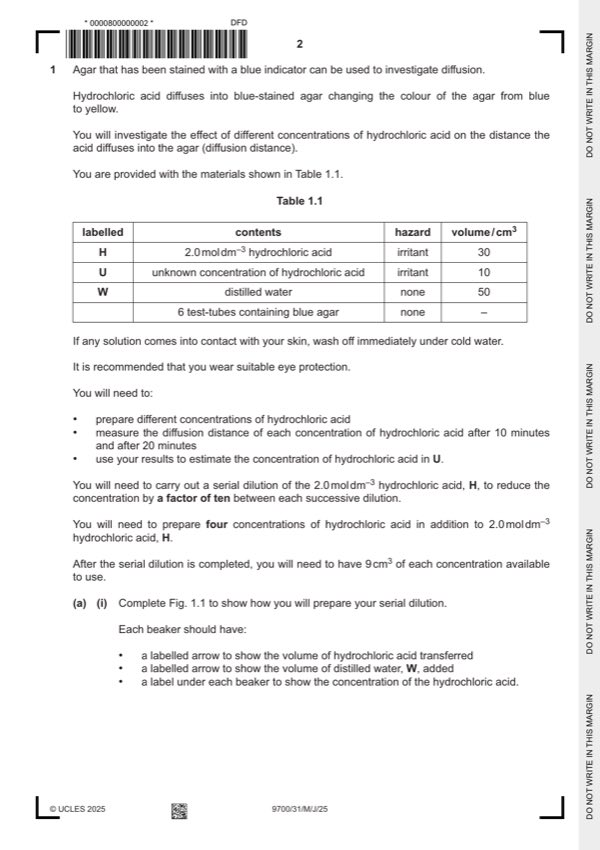

Question 1

Original paper page 2
Part 1(a)(i) — solution
1 four correct concentrations (0.2, 0.02, 0.002, 0.0002) and mol dm–3 at least once ; 3
Mark points
- Include the ideas shown in the solution above.
Part 1(a)(ii) — solution
1 heading for independent variable: concentration of hydrochloric acid / mol dm–3 (before heading for dependent variable) 6
and no units in body of table ;
Mark points
- Include the ideas shown in the solution above.
Part 1(a)(iii) — solution
the higher the concentration the steeper the concentration gradient (so) the greater the diffusion distance ; 1
Mark points
- Include the ideas shown in the solution above.
Part 1(a)(iv) — solution
difficult to judge where to measure the diffusion distance / AW ; 1
Mark points
- Include the ideas shown in the solution above.
Part 1(a)(v) — solution
correct estimate for U based on candidate’s results ; 1
Mark points
- Include the ideas shown in the solution above.
Part 1(a)(vi) — solution
1 stated concentrations both sides of the estimate for U ; 2
any one from:
Mark points
- Include the ideas shown in the solution above.
Part 1(a)(vii) — solution
1 shows measurement at 20 minutes for 2.0 mol dm–3 divided by 20 ; 2
Mark points
- Include the ideas shown in the solution above.
Part 1(a)(viii) — solution
any one from: 1
results support:
Mark points
- Include the ideas shown in the solution above.
Part 1 — solution
diffusion distance is greater in the first 10 minutes than in the second 10 minutes ;
results do not support:
Mark points
- Include the ideas shown in the solution above.
Part 1(b)(i) — solution
1 x-axis: temperature / C 4
and
y-axis: percentage transmission of light ;
Mark points
- Include the ideas shown in the solution above.
Part 1(b)(ii) — solution
any one from: 1
Mark points
- Include the ideas shown in the solution above.
Part 1 — solution
reference to effect on proteins e.g. denatured ;
Mark points
- Include the ideas shown in the solution above.